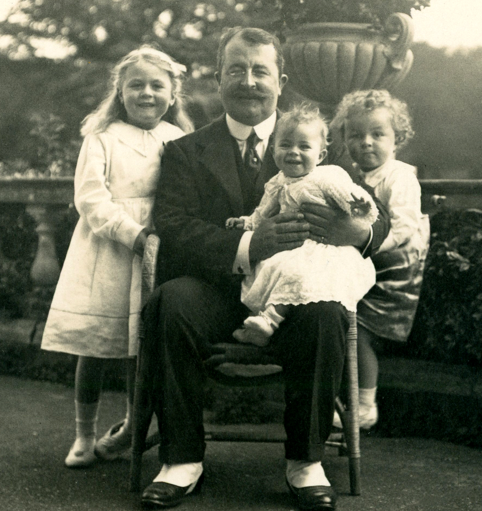

John Quiller Rowett and the Shackleton-Rowett Expedition 1921-1922
John Quiller Rowett was born in Rangoon in 1876, but after his father died, the family returned to Cornwall. In 1889, they moved to Sydenham, London so that John could attend Dulwich College.
After leaving school, Rowett initially took an apprenticeship at a bank, but developed severe tuberculosis and was prescribed “an outdoor existence”. This led to him, in 1895, departing as purser on the SS Orizaba which took him to Australia. He returned to England in 1896, via the United States, and in time established a successful London-based wine and spirits business, at least in part inspired by the burgeoning wine industry he had observed in Australia and California. His companies, Rowett, Leakey & Co and Rowett, Legge & Co, supplied a large proportion of the rum to British forces during WWI.
While at Dulwich College, Rowett had met Ernest Shackleton, who was two academic years ahead. Although not especially close friends they walked the same route to school and exchanged notes on homework, as described by Rowett in a letter to Shackleton’s biographer Dr Hugh Robert Mill, in May 1922: “He was always full of life and jokes, but was never fond of lessons, and I remember we had great difficulty with our modern and classical languages. I was a terrible “duffer” at Greek, and he used to help me sometimes, while I had a friend who knew German very well and used to get hints from this friend which I passed on to Shackleton”. Rowett encountered Shackleton again in 1911, and allowed him to use his offices in Eastcheap, London as a base.
Rowett greatly admired scientific research, particularly in the fields of medicine, agriculture and nutrition, and he became a member of the Biochemical Club. He also sponsored diverse philanthropic causes, including significant donations to dental research and London hospitals, the post-WW1 Adair Wounded Fund (founded by his business partner Basil Leakey), and working men’s clubs in his home county of Cornwall.
In 1913, Rowett married Helen (“Ellie”) Coats, the daughter of Glasgow lawyer John Jackson Coats. Rowett was a devoted family man and he and Ellie had three children, Helen, John and Caroline. In 1919, Rowett acquired Ely Place, a large country estate in East Sussex. With a keen interest in agriculture and animal welfare, he established a model farm adopting the latest farming practices focussing on livestock nutrition and well-being.
The Dulwich College “friend who knew German very well” was Robin Henry Aders Plimmer, who became Professor of Biochemistry at the University of Aberdeen. Plimmer introduced Rowett to Dr John Boyd-Orr, and through this connection Rowett endowed what became known as The Rowett Research Institute in Aberdeen, of which Boyd-Orr was the first Director. The institute carried out pioneering research in animal nutrition. Rowett’s donations, in 1920, included the purchase of 41 acres of land and the construction of purpose-built buildings. A century later, the institute is still a world leader in nutrition research - https://www.abdn.ac.uk/rowett/.
In spring 1921, reportedly after a chance encounter with Shackleton in London, Rowett agreed to make a moderate contribution towards the costs of Shackleton’s planned expedition to the Arctic, which was expected to be for the most part funded by the Canadian government. However, when the Canadian funds were not forthcoming, in favour of Stefansson, John Quiller Rowett offered to fund the entire expedition. By this time, it was too late to mount an expedition to the Arctic that year. So Shackleton instead decided to go South, departing later in 1921, for the Antarctic summer, to which change of plan Rowett agreed, Shackleton promising repayment out of future lectures, films and books.
So was conceived The Shackleton-Rowett Expedition 1921-1922. The steam-powered, wooden Norwegian vessel Foca 1 – renamed the Quest – which had been acquired with the Arctic in mind, was hastily refitted. Notably, it was heavily equipped with all manner of state-of-the-art equipment for meteorology and other scientific research, as well as photographic and cinematographic equipment, and even a seaplane - Rowett was insistent that the expedition should carry out worthwhile scientific research. In addition to the wealth of polar experience in the assembled crew, there was the naturalist Sir George Hubert Wilkins and the geologist George Vibert Douglas.

In the aftermath of the Shackleton-Rowett Expedition, John Quiller Rowett became actively involved in raising a fund with the objects of erecting a permanent monument to Sir Ernest Shackleton, providing funds for Shackleton’s dependents and to pay for the education of his children, with the balance to be devoted to encouraging exploration. He extended friendship and hospitality to the returning expedition members and his family remained particularly close to Alexander Macklin, Leonard Hussey and Frank Wild. He even helped Charlie Green, the cook on the Quest and also of the Endurance expedition, get a job on Cunard’s RMS Aquitania. He also acquired the James Caird, of Shackleton’s Endurance expedition, and committed it to the safe-keeping of Dulwich College.

Scout James Marr dedicated his 1923 book about the Quest’s journey, Into The Frozen South, to John Quiller Rowett. In the foreword he wrote “In my opinion Mr. Rowett deserves a high place in the records of Polar exploration…. Expecting nothing in return for his very considerable outlay, satisfied to know that he was helping a courageous man towards the realization of his ambition, Mr. Rowett cheerfully provided the major part of the funds for this, Shackleton’s last adventure, out of considerations of personal friendship for our leader and in the general interests of scientific research”.
On October 1 1924, John Quiller Rowett, aged 48, was found dead in unexplained circumstances at his London home. He had been unwell for some months, likely his TB had caught up with him, and he had recently suffered very significant business losses having supported the whisky business of Sir John Stewart, which collapsed spectacularly leading to Stewart’s suicide in February 1924. Rowett felt this financial embarrassment deeply. On top of this, characteristically, he had taken the misfortunes of the Quest expedition and subsequent events very personally. The coroner returned a verdict of suicide.
In a contemporary obituary Sir Walter Newman Flower, of Cassel and Co publishers, wrote:
John Q Rowett - a man who always worried for others
If in the course of an average life one meets a man like John Quiller Rowett then to have lived has been worthwhile.
He found success early in life, and spent the rest of his time looking after other people, worrying and fussing himself lest he should overlook some means by which he might help them. No bigger-hearted man ever walked the streets of the City.
He had great business powers and keen judgement, but was always content in a deal to leave a margin for the other man. In this respect he was sometimes over-generous.
His financing of Shackleton was one of those spontaneous acts of generosity which came out of him because he could not help these things. They were part of him. He had not seen Shackleton for years, but a renewed friendship led to his financing an expedition that cost him over £70,000.
And what did he get out of it? One evening last winter we were walking together up a narrow ride in a wood after the last pheasant drive in his Sussex estate. I put that question to him: “What did you get out of it?”
“A lot,” he answered me. “It gave Shackleton the time of his life – he had dreamed of that expedition – and that was good enough for me. If I had the time all over again I know I should do just what I did then – yes even if I knew beforehand that it was going to cost £70,000, for I would do anything for old Shack, and the beggar died happy because I did it.”
That was the Rowett we knew – the man in whose presence one was afraid to mention that one liked a particular thing because, without any warning, that thing arrived on the doorstep next day as a gift.
John Rowett was a great host and a great employer, but he worried too much. He worried because he thought you did not get as much shooting at a particular stand as he wanted you to have; he worried if he thought the beaters had not had all the food they could eat. If any employees were ill he worried until they were well; he worried lest a delayed letter should give a friend any anxiety.
That such a man should be engulfed and swept away in a catastrophe not of his own making is a colossal tragedy. For the Rowetts of life are few.
